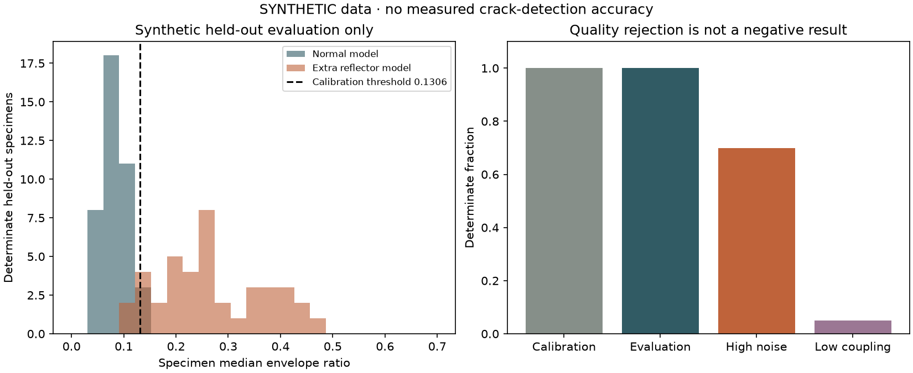
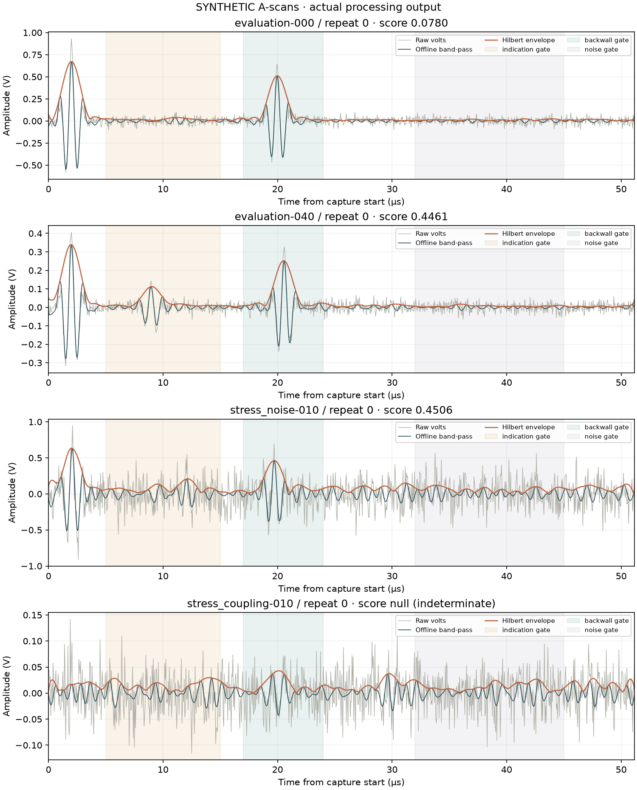

ULTRASONIC SIGNAL LAB / SYNTHETIC / V0.1.0
Pulse-echo research lab.
SYNTHETIC. Offline signal processing. No measured physical crack accuracy, material calibration, safety certification, or hardware test is established by this report.
The threshold 0.13058 was fitted on calibration-normal specimens only. All repeats stay with their specimen.
| Group | Determinate / total | TP / FN | FP / TN | Sensitivity | False-positive rate |
|---|---|---|---|---|---|
| calibration | 64 / 64 | 0 / 0 | 3 / 61 | not defined (n=0) | 4.7% (n=64) |
| evaluation | 80 / 80 | 37 / 3 | 2 / 38 | 92.5% (n=40) | 5.0% (n=40) |
| stress_noise | 14 / 20 | 7 / 0 | 7 / 0 | 100.0% (n=7) | 100.0% (n=7) |
| stress_coupling | 1 / 20 | 1 / 0 | 0 / 0 | 100.0% (n=1) | not defined (n=0) |
Stress failure: high noise falsely flags 7 of 7 accepted normal-model specimens. Low coupling leaves only 1 of 20 specimens determinate. Accepted-only sensitivity must not hide these failures.

Raw signal, band-pass output, and envelope
Shaded gates separate the indication, backwall, and quiet-noise regions. Forward/backward filtering and Hilbert processing use future samples. The score depends on coupling, attenuation, the reference echo, and the chosen gates.

Quality rules and reproducibility
Clipping or a weak backwall makes a capture indeterminate. Two valid repeats are required for a synthetic specimen score. Missing results are excluded from classification denominators and counted separately in the JSON. The synthetic model adds Gaussian-windowed carriers, noise, jitter, and a reflector; it does not model physical crack shape, beam propagation, pores, or printed-part anisotropy.
Code SHA256: 87fe8754e1fd8ff36676a6a09a4881b375ca45f2c5090bd7557d2ad7d6caa2e1
No external scripts, maps, account, telemetry, or network requests are used.
Full metrics and provenance JSON · Exact settings
Built in October 2026. Use independent instrument and specimen calibration before interpreting measured scans.